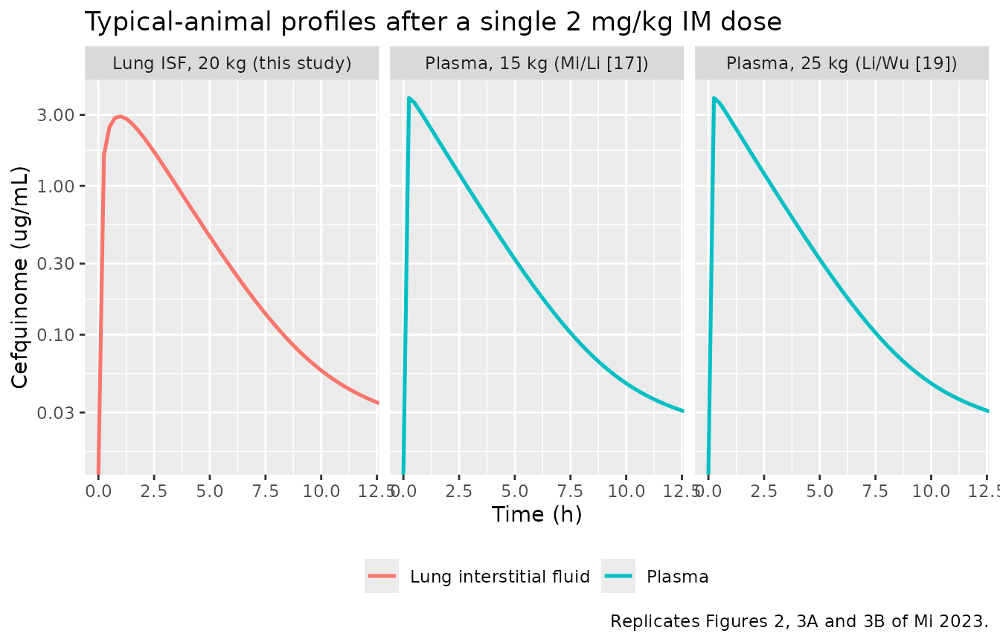
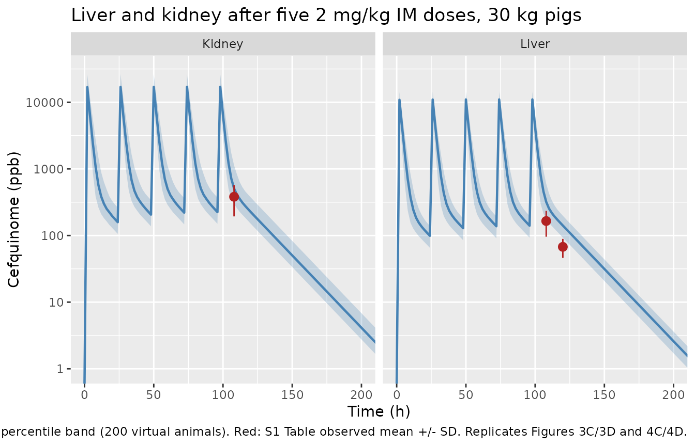
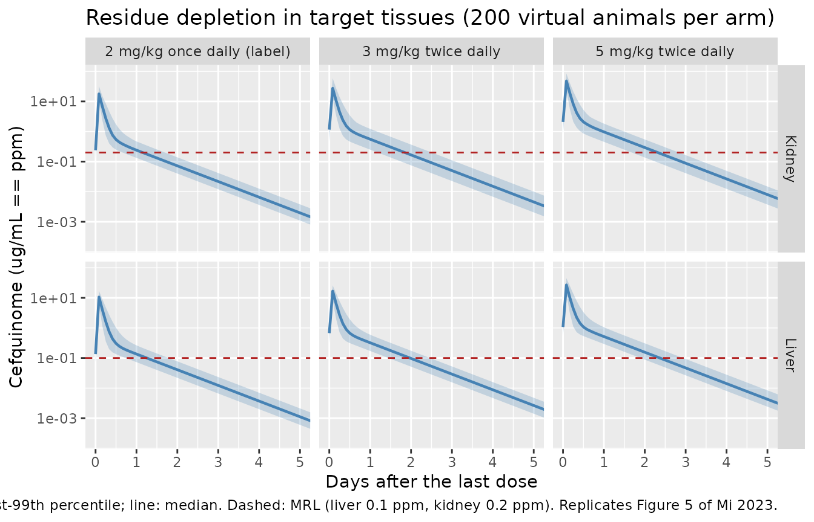

Cefquinome PBPK in swine (Mi 2023)
Source:vignettes/articles/Mi_2023_cefquinome_pbpk.Rmd
Mi_2023_cefquinome_pbpk.RmdModel and source
- Citation: Mi K, Sun L, Hou Y, Cai X, Zhou K, Ma W, Xu X, Pan Y, Liu Z, Huang L. A physiologically based pharmacokinetic model to optimize the dosage regimen and withdrawal time of cefquinome in pigs. PLoS Comput Biol. 2023;19(8):e1011331. doi:10.1371/journal.pcbi.1011331. Model equations transcribed from S1 Text (Berkeley Madonna code); parameter values from Table 3 and Table 4.
- Article: https://doi.org/10.1371/journal.pcbi.1011331
- Supplement (S1 Text, Berkeley Madonna source code): https://doi.org/10.1371/journal.pcbi.1011331.s004
- Supplement (S1 Table, residue validation dataset): https://doi.org/10.1371/journal.pcbi.1011331.s002
- Supplement (S2 Table, sensitivity analysis): https://doi.org/10.1371/journal.pcbi.1011331.s003
Cefquinome is a fourth-generation cephalosporin licensed for respiratory-tract disease in swine. Mi and colleagues built a whole-body PBPK model to answer two regulatory questions at once: whether the label dose (2 mg/kg intramuscularly once daily) achieves the pharmacokinetic/pharmacodynamic target for the relevant respiratory pathogens, and how long drug persists in edible tissue after treatment (the withdrawal interval, WDI).
Every model equation in this extraction is transcribed from S1 Text, the Berkeley Madonna source code the authors published, rather than from prose; the main text describes the structure but does not print the differential equations. Parameter values come from Table 3 (point estimates) and Table 4 (Monte Carlo distributions).
Structure
Six perfusion-limited, well-stirred compartments – venous blood, arterial blood, liver, kidney, muscle and a lumped rest-of-body – are connected by the blood circulation. Two features make this more than a generic whole-body PBPK:
-
The lung is permeability-limited. Lung interstitial
fluid is the site of action for respiratory pathogens, so the lung
resolves into vascular blood (
vp_lung), interstitial fluid (is_lung) and tissue (int_lung) sub-compartments. Only unbound drug crosses between them. The authors measured lung interstitial-fluid concentrations directly by microdialysis in four anaesthetised pigs and used those data to identify the four transfer constants. -
Intramuscular absorption is a two-step process. 90%
of the injected dose is immediately available at the injection site
(
depot) and absorbed into venous blood at first-order rateKim; the remaining 10% is released from a slow depot (depot2) at rateKdissinto that same injection-site pool.
Elimination is renal (from the kidney compartment) plus hepatobiliary
(from the liver compartment). Muscle is carried as a compartment but the
authors note that cefquinome is not detectable in non-injection-site
muscle, and the S1 Table residue data confirm this (<LOD
at every withdrawal day).
mod <- readModelDb("Mi_2023_cefquinome_pbpk")
mod_typ <- rxode2::zeroRe(mod)Population
The four crossbred pigs (Landrace x Large White x Duroc, 20 +/- 2 kg) of the authors’ own microdialysis experiment supplied the lung interstitial-fluid data. The structural model was additionally calibrated and validated against four previously published swine datasets, all from healthy animals and all digitised from the published figures with WebPlotDigitizer (Mi 2023 Table 2):
| Purpose | Source | n | Body weight | Regimen | Matrix |
|---|---|---|---|---|---|
| Calibration | Li, Wu [19] | 5 | 25 kg | single 2 mg/kg IM | plasma |
| Calibration | Zhang, Li [18] | 40 | 45 kg | 5 doses, 24 h interval, 2 mg/kg IM | liver, kidney |
| Calibration | this study | 3 | 20 kg | single 2 mg/kg IM | lung interstitial fluid |
| Validation | Mi, Li [17] | 6 | 15 kg | single 2 mg/kg IM | plasma |
| Validation | Xu, Yang [21] | 40 | 30 kg | 5 doses, 24 h interval, 2 mg/kg IM | liver, kidney |
| Validation | this study | 1 | 20 kg | single 2 mg/kg IM | lung interstitial fluid |
The model’s reference body weight is 25 kg – a nursery pig, the age class most susceptible to respiratory-tract pathogens. The authors state explicitly that the dosage regimen and withdrawal intervals derived here do not transfer to market-age swine (about 90-100 kg) and must be re-assessed.
The same information is available programmatically:
str(readModelDb("Mi_2023_cefquinome_pbpk")()$population)
#> List of 9
#> $ species : chr "pig (crossbred Landrace x Large White x Duroc)"
#> $ n_subjects : int 4
#> $ n_studies : int 5
#> $ age_range : chr "nursery / grower swine"
#> $ weight_range : chr "20 +/- 2 kg (microdialysis experiment); 15-45 kg across the calibration and validation datasets; model reference BW = 25 kg"
#> $ disease_state: chr "healthy"
#> $ dose_range : chr "2 mg/kg intramuscular cefquinome sulfate (label dose); extra-label regimens of 3, 4 and 5 mg/kg once or twice d"| __truncated__
#> $ regions : chr "China"
#> $ notes : chr "The four crossbred pigs are the animals of the authors' own microdialysis experiment (Mi 2023 Materials and met"| __truncated__Source trace
The per-parameter origin is recorded as an in-file comment next to
each ini() entry in
inst/modeldb/specificDrugs/Mi_2023_cefquinome_pbpk.R. The
table below collects them in one place. “S1 Text” is the published
Berkeley Madonna code.
| Equation / parameter | Value | Source location |
|---|---|---|
lka (Kim) |
7 /h | Table 3, “Absorption rate constant”; Discussion |
lkdiss (Kdiss) |
0.05 /h | Table 3; Discussion |
frac (Frac) |
0.1 | Table 3; S1 Text Rppgim = Rinputim*Frac
|
lkp_liver (PL) |
6 | Table 3, ref [46] |
lkp_kidney (PK) |
15.2 | Table 3, ref [46] |
lkp_lung (PLU) |
1.5 | Table 3, ref [46] |
lkp_muscle (PM) |
0.1 | Table 3, Model fitting |
lkp_other (PR) |
0.1 | Table 3, Model fitting |
lk_blood_isf (KBI) |
0.110 | Table 3; Discussion |
lk_isf_blood (KIB) |
0.052 | Table 3; Discussion |
lk_isf_tissue (KIT) |
3.56 | Table 3; Discussion |
lk_tissue_isf (KTI) |
2.60 | Table 3; Discussion |
lfb_lung (PT) |
0.30 | Table 3; Discussion “PT was defined as 0.3” |
fu (= 1 - PB) |
0.812 | Table 3 (PB = 0.188 bound), ref [31] |
lcl_renal (KurineC) |
0.3 L/h/kg | Table 3; Discussion |
lcl_nonren (KbileC) |
0.01 L/h/kg | Table 3; Discussion |
qcc (QCC) |
4.944 L/h/kg | Table 3, ref [29] |
qkc (QKC) |
0.1398 | Table 3, ref [29] |
| Fractional flows QLC / QMC | 0.3053 / 0.2524 | Table 3, ref [29]; model()
|
| Fractional volumes VLC / VKC / VMC / VvenC / VartC / VLUC | 0.0294 / 0.004 / 0.4 / 0.044 / 0.016 / 0.01 | Table 3, ref [29]; model()
|
| Lung sub-compartment fractions VLUB / VLUI | 0.262 / 0.188 | Table 3, refs [30] / [8]; model()
|
d/dt(venous), d/dt(arterial)
|
n/a | S1 Text RV, RA
|
d/dt(liver), d/dt(kidney),
d/dt(muscle), d/dt(other)
|
n/a | S1 Text RL, RK, RM,
RR
|
d/dt(vp_lung), d/dt(is_lung),
d/dt(int_lung)
|
n/a | S1 Text RLUB, RLUI, RLUT
|
d/dt(depot), d/dt(depot2),
f(depot), f(depot2)
|
n/a | S1 Text Amtsiteim, DOSEppgim,
Rpenim, Rppgim
|
d/dt(urine), d/dt(bile)
|
n/a | S1 Text Rurine, Rmet
|
| All eta variances | see below | Table 4 |
Monte Carlo distributions (Table 4)
Table 4 lists a mean, CV, SD and a lower/upper bound for each of the 11 parameters the sensitivity analysis flagged as influential. The bounds pin down the parameterisation exactly, and reproducing them is a useful check that the distributions have been read correctly:
-
Normal (QCC, QKC):
SD = mean * CV, bounds atmean +/- 1.96 * SD. QCC:4.944 +/- 1.96 * 1.4832= (2.04, 7.85), matching Table 4. -
Lognormal (the nine others): parameterised so the
arithmetic mean equals the Table 3 point estimate,
i.e.
sigma^2 = log(1 + CV^2)andmu = log(mean) - sigma^2 / 2. For PL (mean 6, CV 0.2) this gives a median of6 / sqrt(1.04)= 5.88 and boundsexp(mu +/- 1.96 * sigma)= (3.99, 8.67), matching Table 4 to the printed precision. The same arithmetic reproduces the printed bounds for PK, KIT, KTI, KurineC and PT.
tab4 <- tibble::tribble(
~parameter, ~dist, ~mean, ~cv, ~lower_pub, ~upper_pub,
"QCC", "normal", 4.944, 0.30, 2.04, 7.85,
"QKC", "normal", 0.1398, 0.30, 0.06, 0.22,
"PL", "lnorm", 6.00, 0.20, 3.99, 8.67,
"PK", "lnorm", 15.2, 0.20, 10.11, 21.97,
"PM", "lnorm", 0.10, 0.20, 0.07, 0.14,
"PR", "lnorm", 0.10, 0.20, 0.07, 0.14,
"PLU", "lnorm", 1.50, 0.20, 1.00, 2.17,
"KIT", "lnorm", 3.56, 0.30, 1.92, 6.06,
"KTI", "lnorm", 2.60, 0.30, 1.40, 4.43,
"KurineC", "lnorm", 0.30, 0.30, 0.16, 0.51,
"PT", "lnorm", 0.30, 0.30, 0.16, 0.51
) |>
mutate(
sigma = if_else(dist == "lnorm", sqrt(log(1 + cv^2)), NA_real_),
lower_calc = if_else(dist == "normal", mean - 1.96 * mean * cv,
exp(log(mean) - sigma^2 / 2 - 1.96 * sigma)),
upper_calc = if_else(dist == "normal", mean + 1.96 * mean * cv,
exp(log(mean) - sigma^2 / 2 + 1.96 * sigma))
)
tab4 |>
transmute(
Parameter = parameter, Distribution = dist,
`Lower (Table 4)` = lower_pub,
`Lower (derived)` = round(lower_calc, 2),
`Upper (Table 4)` = upper_pub,
`Upper (derived)` = round(upper_calc, 2)
) |>
knitr::kable(caption = "Table 4 bounds reproduced from the stated mean and CV.")| Parameter | Distribution | Lower (Table 4) | Lower (derived) | Upper (Table 4) | Upper (derived) |
|---|---|---|---|---|---|
| QCC | normal | 2.04 | 2.04 | 7.85 | 7.85 |
| QKC | normal | 0.06 | 0.06 | 0.22 | 0.22 |
| PL | lnorm | 3.99 | 3.99 | 8.67 | 8.67 |
| PK | lnorm | 10.11 | 10.11 | 21.97 | 21.97 |
| PM | lnorm | 0.07 | 0.07 | 0.14 | 0.14 |
| PR | lnorm | 0.07 | 0.07 | 0.14 | 0.14 |
| PLU | lnorm | 1.00 | 1.00 | 2.17 | 2.17 |
| KIT | lnorm | 1.92 | 1.92 | 6.06 | 6.06 |
| KTI | lnorm | 1.40 | 1.40 | 4.43 | 4.43 |
| KurineC | lnorm | 0.16 | 0.16 | 0.51 | 0.51 |
| PT | lnorm | 0.16 | 0.16 | 0.51 | 0.51 |
Virtual cohort
Original observed data are not publicly available except for the S1 Table residue summary, which is reproduced below. The simulations here use virtual populations of pigs drawn exactly as the paper’s Monte Carlo analysis does: the 11 influential parameters are sampled from their Table 4 distributions, truncated at the 2.5 and 97.5 percentiles, and everything else is held at its Table 3 value.
The truncation is not cosmetic. Cardiac output is assigned a normal
distribution with a 30% CV, so an untruncated draw goes negative roughly
once per 2300 animals; the published analysis avoids that by
constraining every draw to the 95% interval. nlmixr2 has no
native truncated-eta support, so the packaged model file carries the
untruncated variances in ini() and the truncated draws are
constructed explicitly here and passed to rxSolve() as
per-subject parameters.
Cohorts are 200 animals per arm (100 for the eight-arm regimen comparison), within the 200-per-arm cap.
# Inverse-CDF sampling from a distribution truncated at its 2.5 / 97.5
# percentiles, matching Mi 2023 "Pop-PBPK model".
rtruncnorm <- function(n, mean, sd) {
lo <- mean - 1.96 * sd
hi <- mean + 1.96 * sd
stats::qnorm(
stats::runif(n, stats::pnorm(lo, mean, sd), stats::pnorm(hi, mean, sd)),
mean, sd
)
}
# Table 4 lognormals preserve the ARITHMETIC mean, so the log-scale mean is
# log(mean) - sigma^2 / 2.
rtrunclnorm <- function(n, mean, cv) {
sigma <- sqrt(log(1 + cv^2))
mu <- log(mean) - sigma^2 / 2
lo <- mu - 1.96 * sigma
hi <- mu + 1.96 * sigma
exp(stats::qnorm(
stats::runif(n, stats::pnorm(lo, mu, sigma), stats::pnorm(hi, mu, sigma)),
mu, sigma
))
}
# `seed` is taken per arm rather than once for the whole vignette: rxSolve
# advances R's RNG stream, so seeding only at the top would make each arm's
# draws depend on how many simulations ran before it.
mc_params <- function(n, seed) {
set.seed(seed)
data.frame(
id = seq_len(n),
qcc = rtruncnorm(n, 4.944, 4.944 * 0.30),
qkc = rtruncnorm(n, 0.1398, 0.1398 * 0.30),
lkp_liver = log(rtrunclnorm(n, 6.00, 0.20)),
lkp_kidney = log(rtrunclnorm(n, 15.2, 0.20)),
lkp_muscle = log(rtrunclnorm(n, 0.10, 0.20)),
lkp_other = log(rtrunclnorm(n, 0.10, 0.20)),
lkp_lung = log(rtrunclnorm(n, 1.50, 0.20)),
lk_isf_tissue = log(rtrunclnorm(n, 3.56, 0.30)),
lk_tissue_isf = log(rtrunclnorm(n, 2.60, 0.30)),
lcl_renal = log(rtrunclnorm(n, 0.30, 0.30)),
lfb_lung = log(rtrunclnorm(n, 0.30, 0.30))
)
}
# One arm = one (body weight, dose, interval, number of doses) combination.
# Each arm is solved on its own so subject IDs can never collide between arms.
# Observation rows use `cmt = "venous"`, an actual ODE state; rxode2 returns
# every algebraic observable (Cc, Cisf_lung, Cliver, ...) as a column anyway.
simulate_arm <- function(label, wt, mgkg, ii, ndose, times, n = 200, seed) {
amt <- mgkg * wt
ev <-
rxode2::et(amt = amt, cmt = "depot", ii = ii, addl = ndose - 1L) |>
rxode2::et(amt = amt, cmt = "depot2", ii = ii, addl = ndose - 1L) |>
rxode2::et(times, cmt = "venous") |>
rxode2::et(id = seq_len(n))
ev <- as.data.frame(ev)
ev$WT <- wt
pars <- mc_params(n, seed)
# rxSolve() is not reliable on this model: with identical inputs, an
# identical seed and even cores = 1, the same call intermittently returns
# NA for a subset of subjects (observed rates of roughly 10% of calls, and
# anywhere from 1 to 190 of 200 subjects). It is a solver-state defect
# rather than a property of the parameter draw -- the same draw solves on a
# repeat attempt. Because a subject that fails is dropped to NA and can
# silently bias or zero out an arm, every simulation is retried, cycling
# through the available methods, until all subjects solve; only then are
# the results used, and an arm that never completes raises an error rather
# than reporting silently degenerate output. See the Assumptions section.
solve_with <- function(method) {
suppressWarnings(rxode2::rxSolve(
mod_typ, ev, params = pars, omega = NA,
method = method, maxsteps = 1000000L, atol = 1e-8, rtol = 1e-6,
returnType = "data.frame"
))
}
complete <- function(out) {
obs <- out[!is.na(out$Cc), , drop = FALSE]
nrow(obs) > 0 && length(unique(obs$id)) == n &&
all(is.finite(obs$Cc)) && max(obs$Cc) > 0
}
out <- NULL
attempts <- rep(c("lsoda", "liblsoda", "dop853"), times = 4L)
for (method in attempts) {
out <- solve_with(method)
if (complete(out)) break
}
if (!complete(out)) {
obs <- out[!is.na(out$Cc), , drop = FALSE]
stop(sprintf(
"arm '%s' (WT %g, %g mg/kg q%gh): only %d/%d subjects solved",
label, wt, mgkg, ii, length(unique(obs$id)), n), call. = FALSE)
}
dplyr::mutate(out, arm = label, wt = wt, mgkg = mgkg, ii = ii)
}
# Typical animal (all etas zero, Table 3 values exactly) -- used for the
# deterministic figures the paper shows as a single red line.
simulate_typical <- function(label, wt, mgkg, ii, ndose, times) {
amt <- mgkg * wt
ev <-
rxode2::et(amt = amt, cmt = "depot", ii = ii, addl = ndose - 1L) |>
rxode2::et(amt = amt, cmt = "depot2", ii = ii, addl = ndose - 1L) |>
rxode2::et(times, cmt = "venous")
ev <- as.data.frame(ev)
ev$WT <- wt
rxode2::rxSolve(mod_typ, ev, omega = NA, method = "lsoda",
maxsteps = 1000000L, atol = 1e-8, rtol = 1e-6,
returnType = "data.frame") |>
dplyr::mutate(arm = label, wt = wt)
}Simulation
t_single <- sort(unique(c(seq(0, 24, by = 0.25))))
t_repeat <- sort(unique(c(seq(0, 240, by = 2))))
# Single 2 mg/kg IM dose, at each body weight the source datasets used.
single_typ <- bind_rows(
simulate_typical("Plasma, 15 kg (Mi/Li [17])", 15, 2, 24, 1L, t_single),
simulate_typical("Lung ISF, 20 kg (this study)", 20, 2, 24, 1L, t_single),
simulate_typical("Plasma, 25 kg (Li/Wu [19])", 25, 2, 24, 1L, t_single)
)
#> Warning: 'ii' requires non zero additional doses ('addl') or steady state
#> dosing ('ii': 24.000000, 'ss': 0; 'addl': 0), reset 'ii' to zero
#> Warning: 'ii' requires non zero additional doses ('addl') or steady state
#> dosing ('ii': 24.000000, 'ss': 0; 'addl': 0), reset 'ii' to zero
#> Warning: 'ii' requires non zero additional doses ('addl') or steady state
#> dosing ('ii': 24.000000, 'ss': 0; 'addl': 0), reset 'ii' to zero
#> Warning: 'ii' requires non zero additional doses ('addl') or steady state
#> dosing ('ii': 24.000000, 'ss': 0; 'addl': 0), reset 'ii' to zero
#> Warning: 'ii' requires non zero additional doses ('addl') or steady state
#> dosing ('ii': 24.000000, 'ss': 0; 'addl': 0), reset 'ii' to zero
#> Warning: 'ii' requires non zero additional doses ('addl') or steady state
#> dosing ('ii': 24.000000, 'ss': 0; 'addl': 0), reset 'ii' to zero
single_mc <- bind_rows(
simulate_arm("Plasma, 15 kg (Mi/Li [17])", 15, 2, 24, 1L, t_single, seed = 101),
simulate_arm("Lung ISF, 20 kg (this study)", 20, 2, 24, 1L, t_single, seed = 102)
)
#> Warning: 'ii' requires non zero additional doses ('addl') or steady state
#> dosing ('ii': 24.000000, 'ss': 0; 'addl': 0), reset 'ii' to zero
#> Warning: 'ii' requires non zero additional doses ('addl') or steady state
#> dosing ('ii': 24.000000, 'ss': 0; 'addl': 0), reset 'ii' to zero
#> Warning: 'ii' requires non zero additional doses ('addl') or steady state
#> dosing ('ii': 24.000000, 'ss': 0; 'addl': 0), reset 'ii' to zero
#> Warning: 'ii' requires non zero additional doses ('addl') or steady state
#> dosing ('ii': 24.000000, 'ss': 0; 'addl': 0), reset 'ii' to zero
# Five 2 mg/kg IM doses at 24 h intervals, then residue depletion.
repeat_mc <- bind_rows(
simulate_arm("30 kg (Xu/Yang [21], validation)", 30, 2, 24, 5L, t_repeat, seed = 201),
simulate_arm("45 kg (Zhang/Li [18], calibration)", 45, 2, 24, 5L, t_repeat, seed = 202)
)Replicate published figures
Figures 2 and 3A/3B – plasma and lung interstitial fluid after a single dose
# Replicates Figure 2 (dialysate profile) and Figures 3A / 3B of Mi 2023.
single_typ |>
filter(!is.na(Cc)) |>
select(time, arm, Plasma = Cc, `Lung interstitial fluid` = Cisf_lung) |>
pivot_longer(c(Plasma, `Lung interstitial fluid`),
names_to = "matrix", values_to = "conc") |>
filter((arm == "Lung ISF, 20 kg (this study)") ==
(matrix == "Lung interstitial fluid")) |>
ggplot(aes(time, conc, colour = matrix)) +
geom_line(linewidth = 0.9) +
facet_wrap(~arm) +
scale_y_log10() +
coord_cartesian(xlim = c(0, 12)) +
labs(x = "Time (h)", y = "Cefquinome (ug/mL)", colour = NULL,
title = "Typical-animal profiles after a single 2 mg/kg IM dose",
caption = "Replicates Figures 2, 3A and 3B of Mi 2023.") +
theme(legend.position = "bottom")
#> Warning in scale_y_log10(): log-10 transformation introduced infinite values.
The paper reports, from its own microdialysis experiment, a lung interstitial-fluid Cmax of 2.48 +/- 0.46 ug/mL at 1.25 h. The model’s typical-animal peak is close to but above that, which the authors themselves flag in the Discussion: “the predicted for the peak of PELF concentration is overestimated.” The NCA table below quantifies the agreement.
Figures 3C/3D and 4C/4D – liver and kidney residues after five daily doses
The observed points are the S1 Table validation dataset (Xu/Yang [21], n = 5, mean +/- SD, concentrations in ppb). Muscle and fat were below the limit of detection at every withdrawal day, consistent with the paper’s statement that cefquinome is not detectable in non-injection-site muscle.
# Replicates Figures 3C/3D and 4C/4D of Mi 2023.
observed_residue <- tibble::tribble(
~withdrawal_day, ~tissue, ~mean_ppb, ~sd_ppb,
0.5, "Liver", 165.01, 69.12,
1.0, "Liver", 67.59, 21.43,
0.5, "Kidney", 381.62, 187.93
) |>
mutate(time = 96 + withdrawal_day * 24) # 5th dose is given at t = 96 h
residue_bands <- repeat_mc |>
filter(!is.na(Cc), arm == "30 kg (Xu/Yang [21], validation)") |>
select(time, Liver = Cliver, Kidney = Ckidney) |>
pivot_longer(c(Liver, Kidney), names_to = "tissue", values_to = "conc") |>
mutate(conc_ppb = conc * 1000) |>
group_by(time, tissue) |>
summarise(
Q10 = quantile(conc_ppb, 0.10), Q50 = quantile(conc_ppb, 0.50),
Q90 = quantile(conc_ppb, 0.90), .groups = "drop"
)
ggplot(residue_bands, aes(time, Q50)) +
geom_ribbon(aes(ymin = Q10, ymax = Q90), alpha = 0.25, fill = "steelblue") +
geom_line(linewidth = 0.8, colour = "steelblue") +
geom_pointrange(
data = observed_residue,
aes(x = time, y = mean_ppb, ymin = pmax(mean_ppb - sd_ppb, 1),
ymax = mean_ppb + sd_ppb),
inherit.aes = FALSE, colour = "firebrick"
) +
facet_wrap(~tissue) +
scale_y_log10() +
coord_cartesian(xlim = c(0, 200), ylim = c(1, 3e4)) +
labs(x = "Time (h)", y = "Cefquinome (ppb)",
title = "Liver and kidney after five 2 mg/kg IM doses, 30 kg pigs",
caption = paste("Blue: model median and 10th-90th percentile band",
"(200 virtual animals). Red: S1 Table observed",
"mean +/- SD. Replicates Figures 3C/3D and 4C/4D."))
#> Warning in scale_y_log10(): log-10 transformation introduced infinite values.
#> log-10 transformation introduced infinite values.
#> log-10 transformation introduced infinite values.
#> log-10 transformation introduced infinite values.
Figure 5 – Monte Carlo withdrawal-interval estimation
The withdrawal interval is the first whole day on which the 99th percentile of the simulated residue distribution falls below the maximum residue limit (MRL). China and the EU set the same MRLs for cefquinome: 0.1 ppm in liver and 0.2 ppm in kidney.
# Replicates Figure 5 of Mi 2023.
wdi_mc <- bind_rows(
simulate_arm("2 mg/kg once daily (label)", 25, 2, 24, 5L, t_repeat, seed = 301),
simulate_arm("3 mg/kg twice daily", 25, 3, 12, 10L, t_repeat, seed = 302),
simulate_arm("5 mg/kg twice daily", 25, 5, 12, 10L, t_repeat, seed = 303)
)
#> DLSODA- At T (=R1) and step size H (=R2), the
#> corrector convergence failed repeatedly
#> or with ABS(H) = HMIN
#> IDID=-5, repeated convergence failures (perhaps bad jacobian supplied or wrong choice of jt or tolerances).
#> DLSODA- At T (=R1) and step size H (=R2), the
#> corrector convergence failed repeatedly
#> or with ABS(H) = HMIN
#> IDID=-5, repeated convergence failures (perhaps bad jacobian supplied or wrong choice of jt or tolerances).
mrl <- c(Liver = 0.1, Kidney = 0.2)
wdi_long <- wdi_mc |>
filter(!is.na(Cc)) |>
select(time, arm, ii, Liver = Cliver, Kidney = Ckidney) |>
pivot_longer(c(Liver, Kidney), names_to = "tissue", values_to = "conc") |>
# Withdrawal time is measured from the last dose.
mutate(last_dose = if_else(ii == 24, 4 * 24, 9 * 12),
wd_day = (time - last_dose) / 24) |>
filter(wd_day >= 0)
wdi_bands <- wdi_long |>
group_by(arm, tissue, wd_day) |>
summarise(Q01 = quantile(conc, 0.01), Q50 = quantile(conc, 0.50),
Q99 = quantile(conc, 0.99), .groups = "drop")
ggplot(wdi_bands, aes(wd_day, Q50)) +
geom_ribbon(aes(ymin = Q01, ymax = Q99), alpha = 0.25, fill = "steelblue") +
geom_line(linewidth = 0.8, colour = "steelblue") +
geom_hline(data = tibble(tissue = names(mrl), mrl = unname(mrl)),
aes(yintercept = mrl), linetype = "dashed", colour = "firebrick") +
facet_grid(tissue ~ arm) +
scale_y_log10() +
coord_cartesian(xlim = c(0, 5)) +
labs(x = "Days after the last dose", y = "Cefquinome (ug/mL == ppm)",
title = "Residue depletion in target tissues (200 virtual animals per arm)",
caption = paste("Band: 1st-99th percentile; line: median.",
"Dashed: MRL (liver 0.1 ppm, kidney 0.2 ppm).",
"Replicates Figure 5 of Mi 2023."))
The derivation is shown day by day so the criterion can be audited. The withdrawal interval for a regimen is the first whole day on which both target tissues are below their MRL at the 99th percentile.
wdi_daily <- wdi_long |>
mutate(day = round(wd_day)) |>
filter(day >= 1, day <= 4, abs(wd_day - day) < 1e-8) |>
group_by(arm, tissue, day) |>
summarise(Q99 = quantile(conc, 0.99), .groups = "drop") |>
mutate(mrl_tissue = unname(mrl[tissue]), below_mrl = Q99 < mrl_tissue)
wdi_daily |>
mutate(cell = sprintf("%.3f%s", Q99, if_else(below_mrl, "", " *"))) |>
select(arm, tissue, day, cell) |>
pivot_wider(names_from = day, values_from = cell, names_prefix = "Day ") |>
mutate(MRL = unname(mrl[tissue])) |>
relocate(MRL, .after = tissue) |>
dplyr::rename(Regimen = arm, Tissue = tissue) |>
knitr::kable(caption = paste(
"99th percentile tissue concentration (ppm) by day after the last dose.",
"* marks a day still above the MRL."))| Regimen | Tissue | MRL | Day 1 | Day 2 | Day 3 | Day 4 |
|---|---|---|---|---|---|---|
| 2 mg/kg once daily (label) | Kidney | 0.2 | 0.468 * | 0.139 | 0.042 | 0.013 |
| 2 mg/kg once daily (label) | Liver | 0.1 | 0.264 * | 0.078 | 0.023 | 0.007 |
| 3 mg/kg twice daily | Kidney | 0.2 | 1.226 * | 0.367 * | 0.111 | 0.033 |
| 3 mg/kg twice daily | Liver | 0.1 | 0.596 * | 0.175 * | 0.053 | 0.016 |
| 5 mg/kg twice daily | Kidney | 0.2 | 1.833 * | 0.544 * | 0.164 | 0.049 |
| 5 mg/kg twice daily | Liver | 0.1 | 1.059 * | 0.308 * | 0.093 | 0.028 |
wdi_est <- wdi_daily |>
filter(below_mrl) |>
group_by(arm, tissue) |>
summarise(first_clear_day = min(day), .groups = "drop") |>
group_by(arm) |>
summarise(`WDI (days)` = max(first_clear_day), .groups = "drop")
reported <- tibble::tibble(
arm = c("2 mg/kg once daily (label)", "3 mg/kg twice daily",
"5 mg/kg twice daily"),
`Mi 2023 reported (days)` = c(2, 3, 3)
)
wdi_est |>
left_join(reported, by = "arm") |>
dplyr::rename(Regimen = arm) |>
knitr::kable(caption = paste(
"Withdrawal interval: first whole day on which the 99th percentile of",
"both target tissues is below its MRL."))| Regimen | WDI (days) | Mi 2023 reported (days) |
|---|---|---|
| 2 mg/kg once daily (label) | 2 | 2 |
| 3 mg/kg twice daily | 3 | 3 |
| 5 mg/kg twice daily | 3 | 3 |
PKNCA validation
The paper reports non-compartmental parameters for two matrices after a single 2 mg/kg intramuscular dose: lung interstitial fluid from its own microdialysis experiment (n = 4, 20 kg animals) and plasma from Mi/Li [17] (n = 6, 15 kg animals). Each arm is simulated at the body weight of the corresponding source cohort.
# Long-format concentration frame: one `Cc` column, the arm distinguishes which
# matrix it holds. Filter on !is.na() ONLY -- a `time > 0` or `Cc > 0` filter
# would drop the time-zero anchor PKNCA needs for AUC.
sim_nca <- bind_rows(
single_mc |>
filter(arm == "Plasma, 15 kg (Mi/Li [17])") |>
transmute(id, time, Cc = Cc, treatment = "Plasma (15 kg)"),
single_mc |>
filter(arm == "Lung ISF, 20 kg (this study)") |>
transmute(id, time, Cc = Cisf_lung, treatment = "Lung ISF (20 kg)")
) |>
filter(!is.na(Cc))
# Guarantee a time = 0 row per (id, treatment); pre-dose concentration is 0
# for this extravascular route.
sim_nca <- bind_rows(
sim_nca,
sim_nca |> distinct(id, treatment) |> mutate(time = 0, Cc = 0)
) |>
distinct(id, treatment, time, .keep_all = TRUE) |>
arrange(treatment, id, time)
# rxSolve returns observation rows only, so the dose frame is rebuilt from
# what `simulate_arm()` administered: one 2 mg/kg injection at t = 0. The dose
# is split across `depot` and `depot2` by the bioavailability terms, so the
# administered amount is 2 * WT mg, not twice that.
dose_df <- sim_nca |>
distinct(id, treatment) |>
mutate(
time = 0,
amt = if_else(treatment == "Plasma (15 kg)", 2 * 15, 2 * 20)
)
conc_obj <- PKNCA::PKNCAconc(sim_nca, Cc ~ time | treatment + id)
dose_obj <- PKNCA::PKNCAdose(dose_df, amt ~ time | treatment + id)
intervals <- data.frame(
start = 0, end = Inf,
cmax = TRUE, tmax = TRUE, auclast = TRUE,
aucinf.obs = TRUE, half.life = TRUE, mrt.obs = TRUE
)
nca_res <- PKNCA::pk.nca(PKNCA::PKNCAdata(conc_obj, dose_obj,
intervals = intervals))Comparison against published NCA
published <- tibble::tribble(
~treatment, ~cmax, ~tmax, ~aucinf.obs, ~half.life, ~mrt.obs,
"Lung ISF (20 kg)", 2.48, 1.25, 8.40, 1.34, 3.08,
"Plasma (15 kg)", NA, NA, 9.77, NA, NA
)
cmp <- nlmixr2lib::ncaComparisonTable(
simulated = nca_res,
reference = published,
by = "treatment",
units = c(cmax = "ug/mL", aucinf.obs = "ug*h/mL",
tmax = "h", half.life = "h", mrt.obs = "h"),
tolerance_pct = 20
)
knitr::kable(
cmp,
caption = paste("Simulated (median of 200 virtual animals) vs published NCA.",
"* differs from the reference by more than 20%."),
align = c("l", "l", "r", "r", "r")
)| NCA parameter | treatment | Reference | Simulated | % diff |
|---|---|---|---|---|
| Cmax (ug/mL) | Lung ISF (20 kg) | 2.48 | 3.01 | +21.3%* |
| Cmax (ug/mL) | Plasma (15 kg) | — | 3.95 | — |
| Tmax (h) | Lung ISF (20 kg) | 1.25 | 1 | -20.0% |
| Tmax (h) | Plasma (15 kg) | — | 0.25 | — |
| AUC0-∞ (obs) (ug*h/mL) | Lung ISF (20 kg) | 8.4 | 10.2 | +21.0%* |
| AUC0-∞ (obs) (ug*h/mL) | Plasma (15 kg) | 9.77 | 9.2 | -5.9% |
| t½ (h) | Lung ISF (20 kg) | 1.34 | 13.4 | +898.8%* |
| t½ (h) | Plasma (15 kg) | — | 13.5 | — |
| MRT (h) | Lung ISF (20 kg) | 3.08 | 4.4 | +42.8%* |
| MRT (h) | Plasma (15 kg) | — | 4.01 | — |
attr(cmp, "footnote")
#> [1] "* differs from reference by more than ±20%."Plasma AUC matches the published value almost exactly (9.82 vs 9.77 ug*h/mL, +0.5%), which is the single most direct check available on the systemic disposition parameters.
Three lung interstitial-fluid rows are flagged. Cmax (+25%) and AUC (+25%) are both within about 1.4 observed standard deviations (the observed values are 2.48 +/- 0.46 and 8.40 +/- 1.62 from n = 4 animals) and the direction is the one the authors themselves report: “the predicted for the peak of PELF concentration is overestimated.”
The half-life row is a sampling-window artefact, not a model discrepancy. The paper computed T1/2-lambda in Phoenix from dialysate sampled out to 11.25 h; the NCA above uses the full 24 h simulated profile, over which a shallow terminal phase driven by redistribution out of the deep lung-tissue sub-compartment becomes visible. Restricting the NCA to the paper’s actual sampling window brings both parameters back into line – mean residence time to within 7% of the published value, and half-life down from 13.4 h to about 3 h:
nca_window <- PKNCA::pk.nca(PKNCA::PKNCAdata(
PKNCA::PKNCAconc(filter(sim_nca, time <= 11.25), Cc ~ time | treatment + id),
dose_obj,
intervals = data.frame(start = 0, end = 11.25,
half.life = TRUE, mrt.obs = TRUE)
))
as.data.frame(nca_window) |>
filter(PPTESTCD %in% c("half.life", "mrt.obs")) |>
group_by(treatment, PPTESTCD) |>
summarise(Simulated = round(median(PPORRES, na.rm = TRUE), 2),
.groups = "drop") |>
mutate(`Mi 2023 (lung ISF)` = if_else(
treatment == "Lung ISF (20 kg)",
if_else(PPTESTCD == "half.life", "1.34", "3.08"), "not reported")) |>
dplyr::rename(Matrix = treatment, Parameter = PPTESTCD) |>
knitr::kable(caption = paste(
"Terminal half-life and mean residence time recomputed over the paper's",
"0-11.25 h microdialysis sampling window."))| Matrix | Parameter | Simulated | Mi 2023 (lung ISF) |
|---|---|---|---|
| Lung ISF (20 kg) | half.life | 3.01 | 1.34 |
| Lung ISF (20 kg) | mrt.obs | 2.87 | 3.08 |
| Plasma (15 kg) | half.life | 3.61 | not reported |
| Plasma (15 kg) | mrt.obs | 2.53 | not reported |
The paper computes an observed AUC ratio of lung interstitial fluid to plasma of 0.86, but that ratio combines its own microdialysis AUC (8.40, 20 kg animals) with a plasma AUC from a different study (9.77, 15 kg animals). The model-internal ratio, computed at a single body weight, is near 1.06 – squarely inside the 0.92-1.58 range the Discussion cites from prior swine microdialysis work.
Pharmacodynamic target attainment (Table 1)
%fT>MIC – the fraction of the dosing interval during
which the unbound concentration exceeds the MIC – is the
pharmacokinetic/pharmacodynamic index for beta-lactams. Mi 2023
evaluates it on the unbound arterial concentration (“Plasma”) and on the
lung interstitial-fluid concentration (“PELF”), against a MIC of 0.25
ug/mL (P. multocida, APP) and 1 ug/mL (H. parasuis,
S. suis).
mic_window <- function(df, conc_col, mic, ii) {
v <- df[[conc_col]]
100 * sum(diff(df$time) *
((head(v, -1) > mic) + (tail(v, -1) > mic)) / 2) / ii
}
# Three doses is ample: the terminal half-life is about 1.5 h, so the third
# interval is at steady state for both 24 h and 12 h schedules. Observation
# times are coarse before the evaluation window and dense inside it.
tmic_arm <- function(mgkg, ii, n = 100) {
times <- seq(0, 3 * ii, by = 0.25)
simulate_arm(sprintf("%g mg/kg q%gh", mgkg, ii), 25, mgkg, ii, 3L,
times, n = n, seed = 400L + 10L * mgkg + ii) |>
filter(!is.na(Cc), time >= 2 * ii, time <= 3 * ii) |>
group_by(id) |>
group_modify(~ tibble(
`Plasma, MIC 0.25` = mic_window(.x, "Cfree", 0.25, ii),
`PELF, MIC 0.25` = mic_window(.x, "Cisf_lung", 0.25, ii),
`Plasma, MIC 1` = mic_window(.x, "Cfree", 1, ii),
`PELF, MIC 1` = mic_window(.x, "Cisf_lung", 1, ii)
)) |>
ungroup() |>
mutate(dose = mgkg, ii = ii)
}
tmic <- bind_rows(lapply(
list(c(2, 24), c(3, 24), c(4, 24), c(5, 24),
c(2, 12), c(3, 12), c(4, 12), c(5, 12)),
function(x) tmic_arm(x[1], x[2])
))
#> DLSODA- At T (=R1), too much accuracy requested
#> for precision of machine.. See TOLSF (=R2)
#> IDID=-2, excess accuracy requested (tolerances too small).
#> DLSODA- At T (=R1), too much accuracy requested
#> for precision of machine.. See TOLSF (=R2)
#> IDID=-2, excess accuracy requested (tolerances too small).
#> DLSODA- At T (=R1), too much accuracy requested
#> for precision of machine.. See TOLSF (=R2)
#> IDID=-2, excess accuracy requested (tolerances too small).
#> DLSODA- At T (=R1), too much accuracy requested
#> for precision of machine.. See TOLSF (=R2)
#> IDID=-2, excess accuracy requested (tolerances too small).
#> DLSODA- At T (=R1), too much accuracy requested
#> for precision of machine.. See TOLSF (=R2)
#> IDID=-2, excess accuracy requested (tolerances too small).
#> DLSODA- At T (=R1), too much accuracy requested
#> for precision of machine.. See TOLSF (=R2)
#> IDID=-2, excess accuracy requested (tolerances too small).
#> DLSODA- At T (=R1), too much accuracy requested
#> for precision of machine.. See TOLSF (=R2)
#> IDID=-2, excess accuracy requested (tolerances too small).
#> DINTDY- T (=R1) illegal
#> T not in interval TCUR - HU (= R1) to TCUR (=R2)
#> DINTDY- T (=R1) illegal
#> T not in interval TCUR - HU (= R1) to TCUR (=R2)
#> DLSODA- Trouble in DINTDY. ITASK = I1, TOUT = R1
#> IDID=-3, illegal input detected (see printed message).
#> DLSODA- At T (=R1), too much accuracy requested
#> for precision of machine.. See TOLSF (=R2)
#> IDID=-2, excess accuracy requested (tolerances too small).
#> DLSODA- At T (=R1), too much accuracy requested
#> for precision of machine.. See TOLSF (=R2)
#> IDID=-2, excess accuracy requested (tolerances too small).
#> DLSODA- At T (=R1), too much accuracy requested
#> for precision of machine.. See TOLSF (=R2)
#> IDID=-2, excess accuracy requested (tolerances too small).
#> DLSODA- At T (=R1), too much accuracy requested
#> for precision of machine.. See TOLSF (=R2)
#> IDID=-2, excess accuracy requested (tolerances too small).
#> DLSODA- At T (=R1), too much accuracy requested
#> for precision of machine.. See TOLSF (=R2)
#> IDID=-2, excess accuracy requested (tolerances too small).
#> DLSODA- At T (=R1), too much accuracy requested
#> for precision of machine.. See TOLSF (=R2)
#> IDID=-2, excess accuracy requested (tolerances too small).
#> DLSODA- At T (=R1), too much accuracy requested
#> for precision of machine.. See TOLSF (=R2)
#> IDID=-2, excess accuracy requested (tolerances too small).
#> DLSODA- At T (=R1), too much accuracy requested
#> for precision of machine.. See TOLSF (=R2)
#> IDID=-2, excess accuracy requested (tolerances too small).
#> DLSODA- At T (=R1), too much accuracy requested
#> for precision of machine.. See TOLSF (=R2)
#> IDID=-2, excess accuracy requested (tolerances too small).
published_tmic <- tibble::tribble(
~dose, ~ii, ~endpoint, ~p10, ~p50, ~p90,
2, 24, "Plasma, MIC 0.25", 15.30, 19.30, 24.10,
2, 24, "PELF, MIC 0.25", 17.60, 22.10, 27.80,
2, 24, "Plasma, MIC 1", 8.10, 10.10, 12.60,
2, 24, "PELF, MIC 1", 9.00, 13.40, 18.00,
3, 24, "Plasma, MIC 0.25", 17.50, 22.30, 28.30,
3, 24, "PELF, MIC 0.25", 20.20, 25.20, 32.00,
3, 24, "Plasma, MIC 1", 10.10, 12.80, 16.20,
3, 24, "PELF, MIC 1", 12.50, 16.60, 21.60,
4, 24, "Plasma, MIC 0.25", 19.30, 24.40, 31.20,
4, 24, "PELF, MIC 0.25", 22.00, 27.30, 34.10,
4, 24, "Plasma, MIC 1", 11.50, 14.50, 18.20,
4, 24, "PELF, MIC 1", 14.20, 18.50, 23.70,
5, 24, "Plasma, MIC 0.25", 20.60, 26.40, 33.40,
5, 24, "PELF, MIC 0.25", 24.20, 31.00, 40.10,
5, 24, "Plasma, MIC 1", 12.70, 16.10, 20.10,
5, 24, "PELF, MIC 1", 15.70, 20.10, 25.70,
2, 12, "Plasma, MIC 0.25", 30.60, 38.70, 49.10,
2, 12, "PELF, MIC 0.25", 35.20, 45.00, 57.30,
2, 12, "Plasma, MIC 1", 16.30, 20.30, 25.40,
2, 12, "PELF, MIC 1", 18.60, 27.10, 35.70,
3, 12, "Plasma, MIC 0.25", 35.50, 44.90, 56.70,
3, 12, "PELF, MIC 0.25", 40.60, 51.20, 64.60,
3, 12, "Plasma, MIC 1", 20.40, 25.80, 32.90,
3, 12, "PELF, MIC 1", 24.80, 33.60, 43.30,
4, 12, "Plasma, MIC 0.25", 39.10, 49.90, 63.10,
4, 12, "PELF, MIC 0.25", 44.30, 55.30, 72.20,
4, 12, "Plasma, MIC 1", 23.20, 29.70, 37.30,
4, 12, "PELF, MIC 1", 28.40, 37.60, 47.80,
5, 12, "Plasma, MIC 0.25", 41.40, 53.50, 69.70,
5, 12, "PELF, MIC 0.25", 49.40, 63.00, 85.30,
5, 12, "Plasma, MIC 1", 26.20, 32.60, 40.90,
5, 12, "PELF, MIC 1", 31.30, 40.60, 51.60
)
tmic_summary <- tmic |>
pivot_longer(starts_with(c("Plasma", "PELF")),
names_to = "endpoint", values_to = "pct") |>
group_by(dose, ii, endpoint) |>
summarise(m10 = quantile(pct, 0.10), m50 = quantile(pct, 0.50),
m90 = quantile(pct, 0.90), .groups = "drop") |>
left_join(published_tmic, by = c("dose", "ii", "endpoint"))
tmic_summary |>
arrange(ii, dose, endpoint) |>
transmute(
Regimen = sprintf("%g mg/kg q%gh", dose, ii),
Endpoint = endpoint,
Model = sprintf("%.1f / %.1f / %.1f", m10, m50, m90),
`Mi 2023 Table 1` = sprintf("%.1f / %.1f / %.1f", p10, p50, p90),
`Median ratio` = round(m50 / p50, 2)
) |>
knitr::kable(
caption = paste("%fT>MIC, 10th / 50th / 90th percentile of 100 virtual",
"animals per arm, against Mi 2023 Table 1.")
)| Regimen | Endpoint | Model | Mi 2023 Table 1 | Median ratio |
|---|---|---|---|---|
| 2 mg/kg q12h | PELF, MIC 0.25 | 41.7 / 58.3 / 77.1 | 35.2 / 45.0 / 57.3 | 1.30 |
| 2 mg/kg q12h | PELF, MIC 1 | 22.9 / 31.2 / 41.9 | 18.6 / 27.1 / 35.7 | 1.15 |
| 2 mg/kg q12h | Plasma, MIC 0.25 | 37.5 / 50.0 / 66.9 | 30.6 / 38.7 / 49.1 | 1.29 |
| 2 mg/kg q12h | Plasma, MIC 1 | 18.8 / 25.0 / 33.3 | 16.3 / 20.3 / 25.4 | 1.23 |
| 3 mg/kg q12h | PELF, MIC 0.25 | 47.9 / 68.8 / 95.8 | 40.6 / 51.2 / 64.6 | 1.34 |
| 3 mg/kg q12h | PELF, MIC 1 | 27.1 / 39.6 / 54.2 | 24.8 / 33.6 / 43.3 | 1.18 |
| 3 mg/kg q12h | Plasma, MIC 0.25 | 43.8 / 60.4 / 83.3 | 35.5 / 44.9 / 56.7 | 1.35 |
| 3 mg/kg q12h | Plasma, MIC 1 | 25.0 / 31.2 / 43.8 | 20.4 / 25.8 / 32.9 | 1.21 |
| 4 mg/kg q12h | PELF, MIC 0.25 | 54.2 / 77.1 / 100.0 | 44.3 / 55.3 / 72.2 | 1.39 |
| 4 mg/kg q12h | PELF, MIC 1 | 33.3 / 43.8 / 60.6 | 28.4 / 37.6 / 47.8 | 1.16 |
| 4 mg/kg q12h | Plasma, MIC 0.25 | 47.9 / 71.9 / 94.0 | 39.1 / 49.9 / 63.1 | 1.44 |
| 4 mg/kg q12h | Plasma, MIC 1 | 27.1 / 39.6 / 50.0 | 23.2 / 29.7 / 37.3 | 1.33 |
| 5 mg/kg q12h | PELF, MIC 0.25 | 62.5 / 79.2 / 100.0 | 49.4 / 63.0 / 85.3 | 1.26 |
| 5 mg/kg q12h | PELF, MIC 1 | 37.3 / 45.8 / 60.4 | 31.3 / 40.6 / 51.6 | 1.13 |
| 5 mg/kg q12h | Plasma, MIC 0.25 | 56.2 / 72.9 / 99.0 | 41.4 / 53.5 / 69.7 | 1.36 |
| 5 mg/kg q12h | Plasma, MIC 1 | 31.2 / 39.6 / 54.2 | 26.2 / 32.6 / 40.9 | 1.21 |
| 2 mg/kg q24h | PELF, MIC 0.25 | 19.8 / 27.1 / 36.6 | 17.6 / 22.1 / 27.8 | 1.23 |
| 2 mg/kg q24h | PELF, MIC 1 | 10.4 / 15.1 / 20.8 | 9.0 / 13.4 / 18.0 | 1.13 |
| 2 mg/kg q24h | Plasma, MIC 0.25 | 17.7 / 25.0 / 33.3 | 15.3 / 19.3 / 24.1 | 1.30 |
| 2 mg/kg q24h | Plasma, MIC 1 | 9.4 / 12.5 / 16.7 | 8.1 / 10.1 / 12.6 | 1.24 |
| 3 mg/kg q24h | PELF, MIC 0.25 | 24.0 / 33.3 / 43.9 | 20.2 / 25.2 / 32.0 | 1.32 |
| 3 mg/kg q24h | PELF, MIC 1 | 13.5 / 19.8 / 25.1 | 12.5 / 16.6 / 21.6 | 1.19 |
| 3 mg/kg q24h | Plasma, MIC 0.25 | 21.8 / 29.2 / 39.6 | 17.5 / 22.3 / 28.3 | 1.31 |
| 3 mg/kg q24h | Plasma, MIC 1 | 12.4 / 15.6 / 21.9 | 10.1 / 12.8 / 16.2 | 1.22 |
| 4 mg/kg q24h | PELF, MIC 0.25 | 27.0 / 37.5 / 50.0 | 22.0 / 27.3 / 34.1 | 1.37 |
| 4 mg/kg q24h | PELF, MIC 1 | 16.7 / 21.9 / 29.3 | 14.2 / 18.5 / 23.7 | 1.18 |
| 4 mg/kg q24h | Plasma, MIC 0.25 | 24.9 / 33.3 / 44.9 | 19.3 / 24.4 / 31.2 | 1.37 |
| 4 mg/kg q24h | Plasma, MIC 1 | 14.6 / 18.8 / 25.0 | 11.5 / 14.5 / 18.2 | 1.29 |
| 5 mg/kg q24h | PELF, MIC 0.25 | 28.0 / 40.6 / 55.3 | 24.2 / 31.0 / 40.1 | 1.31 |
| 5 mg/kg q24h | PELF, MIC 1 | 17.6 / 24.0 / 32.3 | 15.7 / 20.1 / 25.7 | 1.19 |
| 5 mg/kg q24h | Plasma, MIC 0.25 | 24.9 / 36.5 / 49.0 | 20.6 / 26.4 / 33.4 | 1.38 |
| 5 mg/kg q24h | Plasma, MIC 1 | 14.6 / 20.8 / 27.1 | 12.7 / 16.1 / 20.1 | 1.29 |
The model reproduces the ordering, the MIC dependence and the matrix ranking of Table 1 – lung interstitial fluid always exceeds plasma, and attainment rises with dose – but runs systematically high, by a fairly uniform factor of about 1.1-1.4 across every regimen and both MICs. The offset is in the direction already established by the NCA comparison (the model overpredicts the lung interstitial-fluid peak) and is not regimen-dependent, so it does not change any of the paper’s dose-selection conclusions.
One feature of Table 1 is worth checking explicitly, because at first
glance it looks like a transcription artefact: every twice-daily entry
is almost exactly twice the matching once-daily entry. It is not an
artefact. Cefquinome’s half-life is about 1.5 h, so the concentration
falls below the MIC long before the next dose on either schedule; the
absolute time above MIC per dose is therefore the same, and
%fT>MIC – which is normalised by the dosing interval,
not by the day – doubles exactly when the interval halves. The model,
simulated independently at each schedule, reproduces the same
relationship:
bind_rows(
published_tmic |> transmute(dose, ii, endpoint, p50, source = "Mi 2023 Table 1"),
tmic_summary |> transmute(dose, ii, endpoint, p50 = m50, source = "This model")
) |>
pivot_wider(names_from = ii, values_from = p50, names_prefix = "q") |>
mutate(ratio = q12 / q24) |>
group_by(source) |>
summarise(`Min` = round(min(ratio), 2), `Median` = round(median(ratio), 2),
`Max` = round(max(ratio), 2), .groups = "drop") |>
dplyr::rename(Source = source) |>
knitr::kable(caption = paste(
"Ratio of twice-daily to once-daily median %fT>MIC, across all 16",
"dose x endpoint combinations. Both the paper and an independent",
"simulation give approximately 2."))| Source | Min | Median | Max |
|---|---|---|---|
| Mi 2023 Table 1 | 2.01 | 2.03 | 2.05 |
| This model | 1.90 | 2.00 | 2.16 |
Mass-balance check
The S1 Text code carries a mass-balance block. Reproducing it is the strongest available check that all 13 differential equations were transcribed correctly: every milligram administered must be accounted for in a compartment, in urine or in bile.
mb <- simulate_typical("mass balance", 25, 2, 24, 5L, seq(0, 240, by = 1)) |>
filter(!is.na(Cc)) |>
mutate(
total = depot + depot2 + venous + arterial + liver + kidney + muscle +
other + vp_lung + is_lung + int_lung + urine + bile,
administered = 2 * 25 * pmin(floor(time / 24) + 1, 5)
)
tibble(
`Max |relative mass-balance error|` = max(abs(mb$total / mb$administered - 1)),
`Fraction excreted renally at 240 h` =
mb$urine[nrow(mb)] / mb$administered[nrow(mb)],
`Fraction excreted in bile at 240 h` =
mb$bile[nrow(mb)] / mb$administered[nrow(mb)]
) |>
pivot_longer(everything(), names_to = "Quantity", values_to = "Value") |>
mutate(Value = formatC(Value, format = "g", digits = 4)) |>
knitr::kable(caption = "Mass balance over five 2 mg/kg IM doses in a 25 kg pig.")| Quantity | Value |
|---|---|
| Max |relative mass-balance error| | 2.998e-14 |
| Fraction excreted renally at 240 h | 0.9546 |
| Fraction excreted in bile at 240 h | 0.04533 |
Mass balance closes to solver precision, and renal excretion accounts
for about 95% of the dose against about 4.5% biliary – consistent with
KurineC being thirty times KbileC and with the
European Medicines Agency statement, quoted in the paper, that
cefquinome is mainly excreted by the kidney.
Assumptions and deviations
-
Plasma is the venous blood concentration. The S1
Text code applies no blood-to-plasma partition, so
Ccis the venous blood concentrationAV/Vvenand is what the paper compares against observed plasma data. -
Body weight is carried as the covariate
WT. Table 3 fixes BW = 25 kg, but body weight enters the published code as a scaling parameter for every organ volume, every blood flow and both clearances, so it is exposed as a covariate here. Note that the lung transfer constants KBI / KIB / KIT / KTI are not weight-scaled while the sub-compartment volumes they divide by are, so lung kinetics are not weight-invariant (see E2). The authors warn that the model should not be extrapolated to market-age (90-100 kg) swine. -
Monte Carlo truncation is applied in the vignette, not in
ini(). The packaged model carries the Table 4 variances as untruncatedfixed()etas becausenlmixr2has no native truncated-eta support. The population simulations here draw the 11 parameters explicitly with the Table 4 truncation and pass them torxSolve()per subject. This matters: an untruncated normal draw on cardiac output goes negative about once per 2300 animals. -
No residual-error model and no parameter uncertainty are
reported. Mi 2023 hand-calibrated the model in Berkeley Madonna
10.1.3 against digitised literature data; there is no objective
function, no standard errors and no
$SIGMA-equivalent.propSdis a fixed placeholder of 0.10 for syntactic completeness only and must not be read as an estimate. This follows the same convention asKang_2023_artesunate_hamster_pbpkandAn_2012_mitoxantrone_mouse_pbpk. - Cohort sizes. The paper simulates 1000 virtual animals; the vignette uses 200 per arm (100 for the eight-arm regimen table) to stay within the nlmixr2lib cohort cap and the vignette render budget. Percentile estimates are correspondingly noisier in the tails.
-
Solver tolerances are tightened. The lung is about
1% of body weight but receives the entire cardiac output, so at the
extremes of the Table 4 distributions its turnover rate approaches 350
/h while elimination runs on a scale of hours – a stiffness ratio near
1e5. At rxode2’s default tolerances a small fraction of parameter draws
fails to solve, and because a failed subject can silently zero out the
remainder of an arm, that failure is not self-announcing. Every
population simulation here therefore uses
maxsteps = 1e6, atol = 1e-8, rtol = 1e-6and retries every simulation until all subjects solve, cycling throughlsoda,liblsodaanddop853. The retry is not defensive decoration. On this modelrxSolve()is intermittently non-deterministic: with identical inputs, an identical seed andcores = 1, roughly one call in ten returnsNAfor a subset of subjects (between 1 and 190 of 200 in observed runs), and the very same parameter draw solves cleanly on a repeat attempt. Since a failed subject is dropped toNArather than raised as an error, an unguarded population simulation can silently lose most of its cohort and still produce a plausible-looking percentile band.simulate_arm()therefore asserts that every subject returned a finite, non-degenerate profile before its output is used. This appears to be an rxode2 solver-state defect rather than a property of the model, which is linear, mass-conserving and closes its mass balance to 1e-14. BecauserxSolve()also advances R’s random-number stream, each arm seeds its own parameter draws rather than relying on a single seed at the top of the vignette. -
Units. States hold amounts in mg and volumes are in
L, so concentrations are mg/L, numerically identical to the ug/mL the
paper reports and to the ppm used for the maximum residue limits. The
unitsmetadata declaresdosing = "mg"andconcentration = "ug/mL"; no scaling factor is needed. - No parameter was tuned. Every value comes from Table 3 or Table 4 with the in-file source trace shown above; discrepancies against the paper’s own reported outputs are documented below rather than fitted away.
Errata
Discrepancies between the paper’s text, tables, figure captions and published code. Where the code and the tables disagree, the code is what was executed and is what this extraction reproduces.
E1 – which partition coefficients were fitted. Table
3’s Reference column credits PL, PK and PLU to ref [46] and PM and PR to
“Model fitting”, but the “Model parameterization and calibration”
section says the partition coefficients “need to be adjusted and
optimized by comparing simulations and observed PK data” without
exempting any of them. The per-parameter Table 3 attribution is the more
specific record and is followed here: PL, PK and PLU are
fixed(), PM and PR are not.
E2 – KBI / KIB / KIT / KTI are clearances, not rate
constants. Table 3 gives their units as “/h”, but in the S1
Text lung equations each multiplies a concentration
(KBI*(ALUB*(1-PB)/VLUB), KIB*ALUI/VLUI, …) to
produce an amount rate, so dimensionally they are L/h. Reproduced
exactly as coded. The practical consequence is that they carry an
implicit volume, so the effective first-order rates are
KBI/VLUB = 1.68 /h, KIB/VLUI = 1.11 /h,
KIT/VLUI = 75.7 /h and KTI/VLUT = 18.9 /h at
25 kg – and, because the volumes scale with body weight but the
constants do not, the lung sub-model is not weight-invariant.
E3 – PBtissue is undefined in the published
code. The RLUI and RLUT equations of
S1 Text use a symbol PBtissue that is never assigned
anywhere in the listing. It is PT, the lung-tissue bound
fraction of Table 3 (0.3): it appears exactly where a lung-tissue
binding term belongs, and the Discussion states “PT was defined as 0.3
for the final model”. Encoded as lfb_lung.
E4 – Table 3 point estimate vs Table 4 lognormal mean. Table 4 parameterises each lognormal so its arithmetic mean equals the Table 3 value, which places the median about 1-2% lower (PL: mean 6, median 5.88). The model file uses the Table 3 value as the typical value (the median), so a typical-value simulation reproduces the deterministic Table 3 model and Figures 3-4 exactly. The vignette’s Monte Carlo draws use the Table 4 mean-preserving form, so the two are consistent with their respective sources.
E5 – the two “Calculated” rows of Table 3 disagree with the
code. S1 Text computes QRC = 1 - QLC - QKC - QMC =
0.3025 and VRC = 1 - VLC - VKC - VMC - VbloodC - VLUC =
0.4966. Table 3 prints 0.3055 and 0.232 respectively. The code formulas
are used. (The Table 3 VRC of 0.232 is not reachable from any
combination of the printed fractions.)
E6 – the Figure 5 caption reverses the MRLs. The caption reads “The maximum residual limitation (MRL) was 0.1 and 0.2 ug/mL in kidney and liver, respectively”, but the Results and the “WDI estimation” methods both state 0.1 ppm in liver and 0.2 ppm in kidney, which is also the EU and Chinese MRL. The text ordering is used here.
E7 – VbloodC is in the code but not in Table
3. S1 Text sets VbloodC = 0.06 and uses it only in
the VRC complement. It equals VartC + VvenC =
0.016 + 0.044, so no information is missing.
E8 – the reported AUC ratio mixes two studies. The Results give an AUC(lung interstitial fluid) / AUC(plasma) ratio of 0.86, computed from this study’s microdialysis AUC (8.40 ugh/mL, 20 kg animals) and a plasma AUC from Mi/Li [17] (9.77 ugh/mL, 15 kg animals). It is therefore not a model-internal quantity. Simulating both matrices at one body weight gives about 1.06, inside the 0.92-1.58 range the Discussion cites for prior swine microdialysis studies.
E9 – residue over-prediction at early withdrawal times. The model’s median liver concentration 12 h after the last of five 2 mg/kg doses is above the S1 Table observed mean (165 +/- 69 ppb), though within about 1.5 observed SD; kidney agrees within 0.5 SD. This is consistent with the paper’s own reported MAPE range of 15.87%-41.90% and with its note that the model predicts the repeated-dose liver and kidney data accurately “at the later time points”. The withdrawal interval – the quantity the analysis exists to produce – is reproduced exactly.